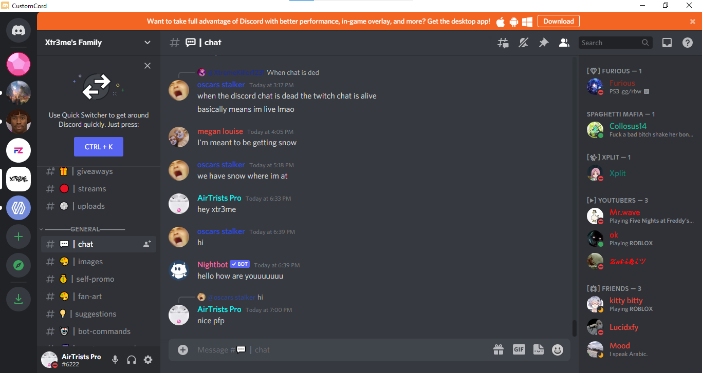

CustomCord is a custom version of Discord made using Neutralino.js. It is based on my old Discord client, ElectroCord. It barely takes up any memory, and it's really fast (so if you have a not so good PC, this is sure to work on your system)!

Install for: Windows
Once download is finished, extract it, make sure you have these two things:
| Feature | Supported by CustomCord |
|---|---|
| Sending and Receiving Messages | Yes |
| Buying Nitro and Boosts | Yes |
| Use Bots | Yes |
| Join Voice Channels and Servers | Yes |
| Custom Keybinds | No |
| Push to Talk and Voice Activity | Yes |
| Make Custom Rich Presences | No |
| Spotify Song Detection | Yes |
| App Overlay | No |
I am not responsible if you get banned off discord from using this client.
You want to contribute eh? If so, just do a pull request!
If you ever need support, contact me on my email fireyjavascript@gmail.com or make a GitHub Issue.